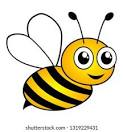
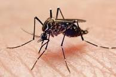

| home | about us | contact | help us | view | new tab | |||||||||
|  | honey beeDescription: Honey bee is a widely distributed flying insect know for its ability to collect nectar from flowers and produce honey. Honey bees (right) are mustard yellow and brown.They have stocky bodies that are covered with many hairs to which pollen adheres. The honey bee's primary commercial value is as a pollinator of crops. Another bee that you might encounter in Washington is the orchard mason bee (Osmia lignaria). The orchard mason bee is usually slightly smaller than a honey bee and is shiny dark blue in color. The orchard mason bee is a gentle beneficial insect that has potential as a pollinator of apples, cherries, and other tree fruits. It is found throughout most of North America, particularly in wooded areas but often around homes in towns and cities. The orchard mason bee i s non-aggressive and will sting only if handled roughly (source: WSU). |
|||||||||||||
mosquitoDescription: mosquito, (family Culicidae), any of approximately 3,500 species of familiar insects in thefly order, Diptera, that are important in public health because of the bloodsucking habits of the females. Mosquitoes are known to transmit serious diseases, including yellow fever, Zika fever, malaria, filariasis, and dengue. |
 | |||||||||||||
|
|
|
feedback |
||||||||||||